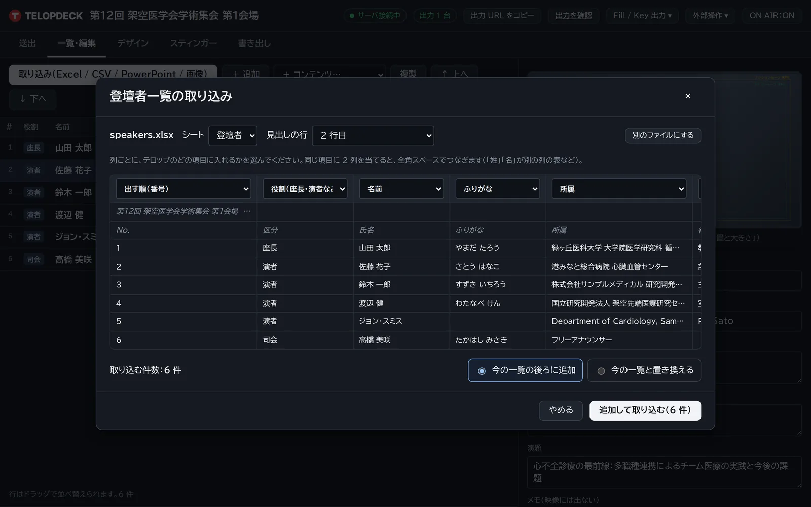
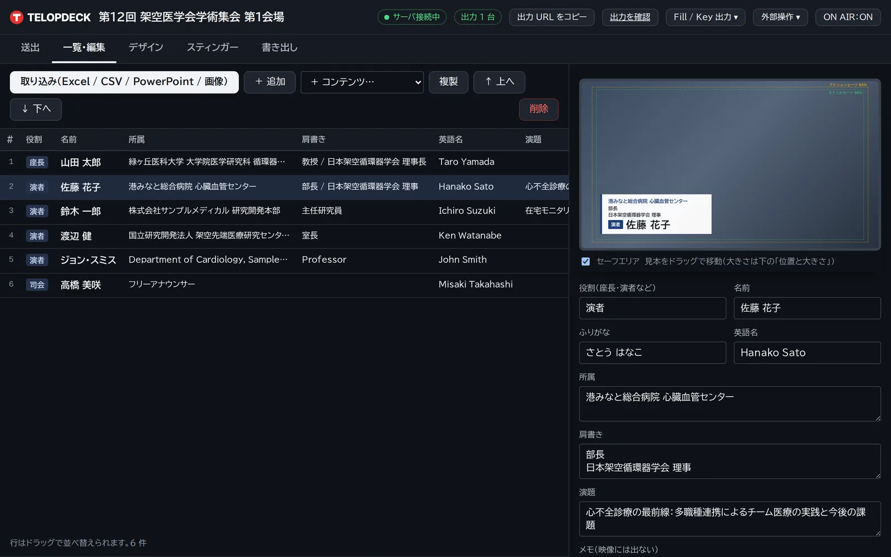
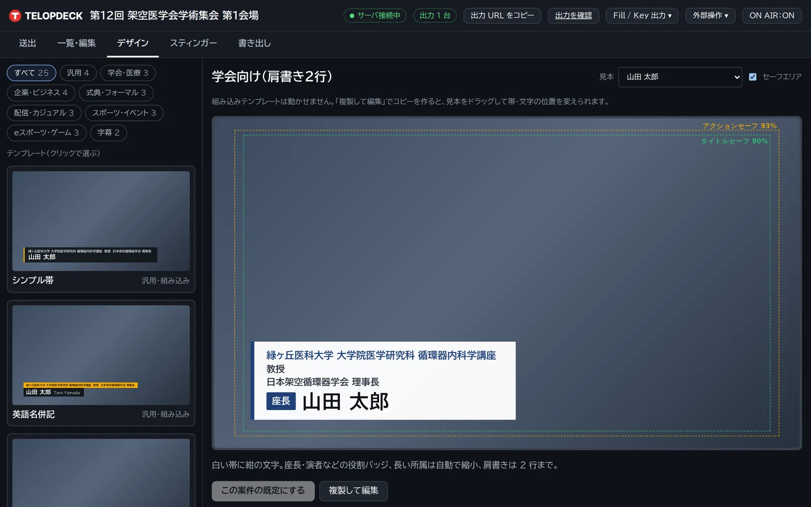
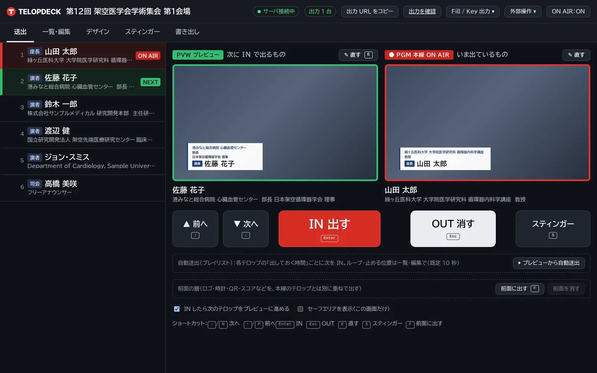
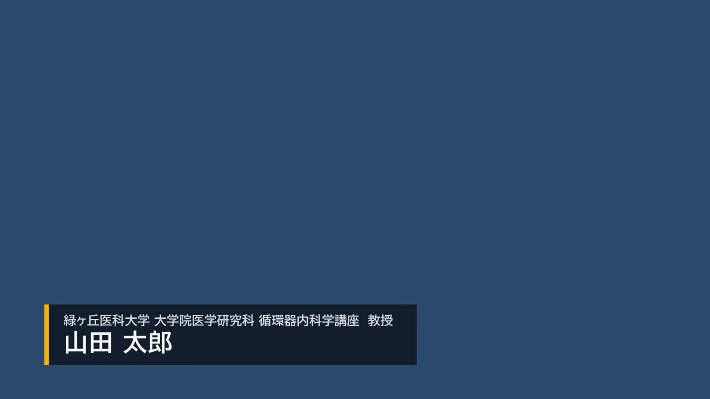
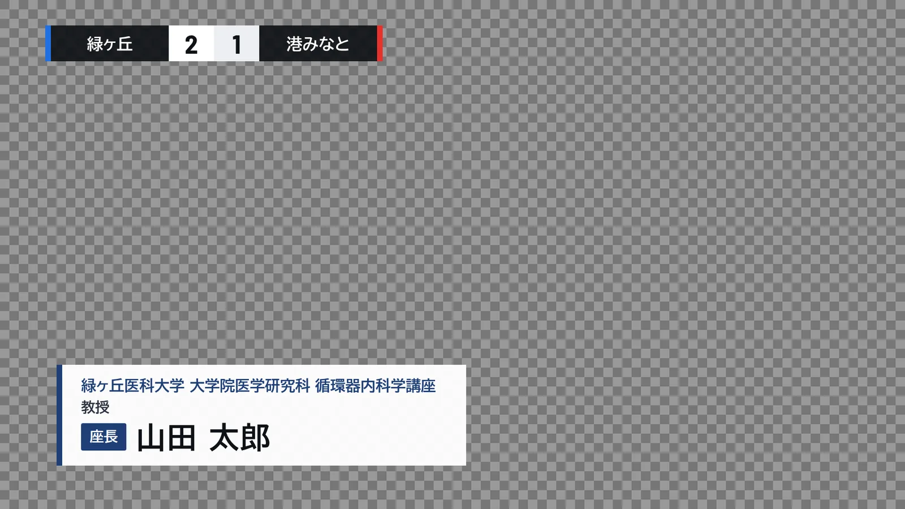
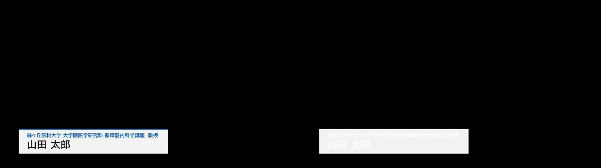
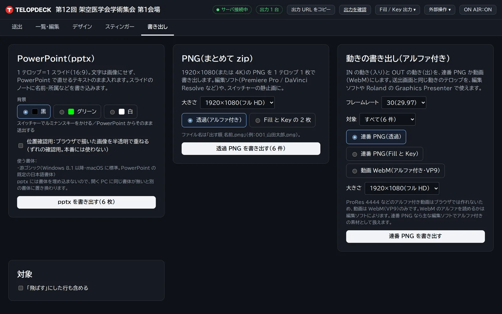
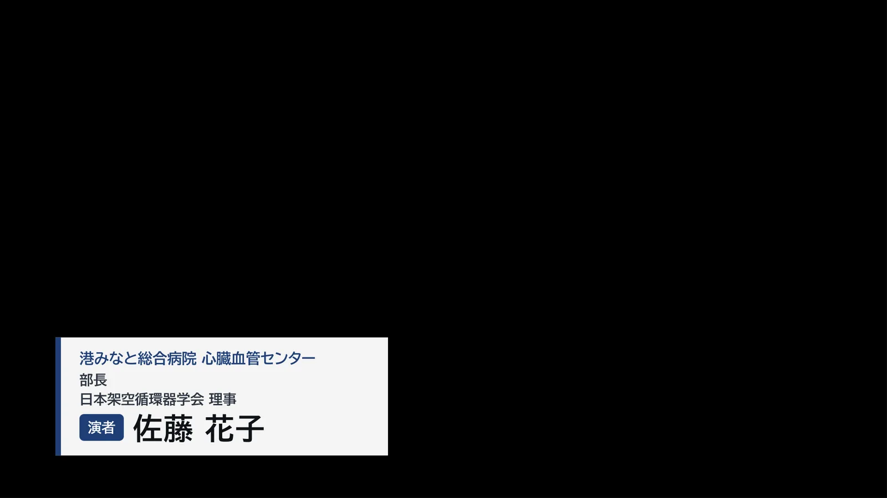

CH 01
手元の登壇者一覧から始める
Import

Import登壇者一覧の取り込み
Excel・CSV
Excelの一覧を、そのまま読み込む
- Excel（.xlsx）・CSV・貼り付けCSV は UTF-8 / Shift_JIS のどちらでも。Excel からの貼り付けにも対応します。
- 列の対応は画面で選べる見出しから列の対応を推測し、画面で選び直せます。
- 表の上のタイトル行は読み飛ばす表の上にあるタイトル行は、自動で読み飛ばします。

Edit一覧・編集
一覧・編集
テロップを見ながら直す
- 追加・複製・削除・並べ替え並べ替えはドラッグでもボタンでも。
- はみ出しそうなものには注意長い所属は自動で縮み、はみ出しそうなものには注意が出ます。
CH 02
学会・講演会の日本語組版
Design

Designデザイン画面
テンプレート
25種類のテンプレート・8ジャンル
- 学会・企業・式典・配信・スポーツ・eスポーツ・字幕など
- 複製して変えられる色・位置・大きさ・書体・ロゴを変更できます。
- セーフエリアの表示
Video動画テンプレート 8 種
動画テンプレート
帯・飾りは 60fps の透過動画
- 動画テンプレート 8 種帯・飾りは 60fps の透過動画で、名前・所属はその上に重ねて出します。
- 自分で作った動画も自分で作った動画も読み込めます。
Motion動きのあるテンプレート 8 種
動き
入りと抜けに動きのあるテンプレート
- 動きのあるテンプレート 8 種ワイプ・スラントなど。配信・スポーツ・企業イベント向けにも。
日本語の組版を、自動で
縮小
長い所属を幅に合わせる
長い所属は、幅に合わせて自動で縮小します。
2行
肩書き2行・英語名の併記
肩書きの2行組み、英語名の併記、禁則処理に対応します。
バッジ
役割バッジ
座長・演者などの役割をバッジで表示します。
CH 03
次に出すものと、いま出ているもの
Playout

Playout送出画面
送出
次に出すものと、いま出ているものを分けて表示
- プレビュー（PVW）と本線（PGM）プレビューは緑、本線は赤。映像スイッチャーと同じ見分け方です。
- IN / OUT / 次へ、キーボードでも大きなボタンに加えて、Enter・Esc・矢印キーで操作できます。出し入れはフェードで。
- リアルタイム同期複数の操作画面・出力画面が、同時に同じ状態になります。

OBSOBS Studio 32.2.0 で重ねたところ
透過の出力画面
OBSのブラウザソースにURLを入れるだけ
- 背景が透明の出力画面そのまま映像に重なります。帯の半透明部分からは下の映像が透けます。
- OBS Studio 32.2.0 で確認

Layersスコアと名前テロップを別の層で
前面の層
カウントダウン・時計・スコアを、別の層で
- 名前テロップとは別の層カウントダウン・時計・スコア・QR コード・メンバー一覧を、名前テロップとは別の層で重ねて出せます。

Fill & Key左が Fill、右が Key
Fill & Key 出力
スイッチャーのキーヤーへ、HDMI 2本で
- 2 本が同じコマで動く1 つの画面に横並びで描くので、2 本が同じコマで動きます。
CH 04
送出と同じ見た目を、ファイルでも
Export

Export書き出し画面
pptx・PNG
文字はテキストのままのpptx
- 1テロップ1スライド・16:9文字は画像にせず、テキストのまま書き出します。
- 背景は 黒／グリーン／白スイッチャーでキーをかける運用や、事前にクライアントへ確認用に送る用途に。
- 透過PNGの一括書き出し1920×1080・背景透明で、zip にまとめて書き出します。

PPTXLibreOffice Impress 24.2 で開いたところ
同じ見た目
送出画面と見た目がそろう
- 出力画面と画素で比べて確認LibreOffice Impress 24.2 で描画して出力画面と比べ、ずれは ±1px 程度でした。
| 機能 | 内容 |
|---|
| 登壇者一覧の取り込み | Excel（.xlsx）・CSV（UTF-8 / Shift_JIS）・Excelからの貼り付け。列の対応は画面で選べる。表の上のタイトル行は自動で飛ばす |
|---|
| 手入力・並べ替え・複製 | 一覧で追加・複製・削除、ドラッグ／ボタンで並べ替え |
|---|
| 日本語の組版 | 長い所属は幅に合わせて自動縮小、肩書き2行、英語名の併記、禁則、役割バッジ（座長・演者） |
|---|
| テンプレート25種 | 8ジャンル（学会・企業・式典・配信・スポーツ・eスポーツ・字幕など）。複製して色・位置・大きさ・書体・ロゴを変更 |
|---|
| 動画テンプレート8種 | 帯・飾りは 60fps の透過動画、名前・所属はその上に重ねる。自分で作った動画も読み込める |
|---|
| 送出 | プレビュー（次に出すもの）と本線（いま出ているもの）を分けて表示。IN / OUT / 次へ、キーボード操作、フェード |
|---|
| 透過の出力画面 | OBSのブラウザソースにURLを入れて映像に重ねる（OBS Studio 32.2.0 で確認） |
|---|
| Fill & Key 出力 | スイッチャーのキーヤーへ HDMI 2 本で。1 つの画面に横並びで描くので、2 本が同じコマで動く |
|---|
| 前面の層 | カウントダウン・時計・スコア・QR コード・メンバー一覧を、名前テロップとは別の層で重ねる |
|---|
| リアルタイム同期 | 複数の操作画面・出力画面が同時に同じ状態になる |
|---|
| pptx書き出し | 1テロップ1スライド・16:9、文字はテキストのまま、背景は黒／グリーン／白 |
|---|
| 透過PNG一括書き出し | 1920×1080・背景透明、zipでまとめて |
|---|
登壇者の一覧を、
お持ちください。
お手元のExcelの一覧で、取り込みから送出・pptx書き出しまでをお見せします。